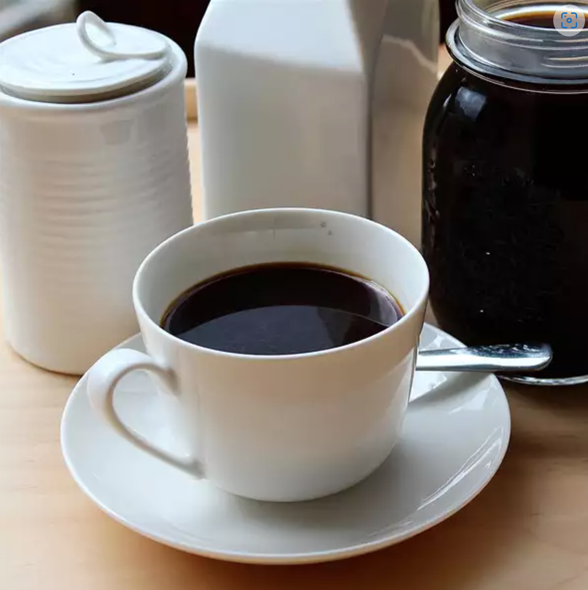

Cold-Brewed Coffee

Description
Coffee brewed slowly in cold water is less acidic than hot brewed. You can
use this concentrate straight over ice or microwave half a mug coffee and
then add a half cup of boiling water for quick hot coffee. Go crazy,
develop your own ratio of coffee to water for your custom brew.
Ingredients
- ½ pound coarsely ground coffee beans
- 4½ cups cold water
- cheesecloth
- coffee filters
- patience
Steps
-
Put coffee grounds in a large container. Slowly pour water over the
grounds.
-
Cover bowl with plastic wrap and steep at room temperature for 18 to 24
hours.
-
Line a strainer with several layers of cheesecloth and place atop a
pitcher; strain coffee through the cheesecloth into the pitcher. Discard
the grounds. To get a clearer brew, strain coffee again through coffee
filters. Store in refrigerator.
-
Drink it all alone during a hot summer night watching a nice slow movie.